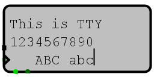

Терминал
Терминал
| Библиотека: |
Ввод/вывод |
| Введён в: |
2.2.0 |
| Внешний вид: |
 |
Поведение
Этот компонент реализует очень простой терминал. Он принимает последовательность ASCII кодов и отображает каждый
печатаемый символ. Если текущая строка становится полной, то курсор перемещается на следующую строку, возможно
прокручивая все текущие строки вверх, если курсор уже находился в нижнем ряду. Поддерживаемые управляющие
последовательности: Backspace (ASCII 8), которая удаляет последний символ в последней строке, если она не пуста;
переход на следующую строку (ASCII 10), которая перемещает курсор в начало следующей строки, прокручивая строки,
если необходимо; и подача страницы (ASCII 12, печатается как Control-L), которая очищает экран.
Контакты
- Левая сторона, верхний контакт (вход, разрядность равна 7)
- Данные - ASCII значение следующего символа, вводимого в терминал.
- Левая сторона, нижний контакт, отмечен треугольником (вход, разрядность равна 1)
- Тактовый вход - когда срабатывает при ненулевом значении на контакте Разрешение записи, текущее ASCII
значение на входе Данные обрабатывается терминалом.
- Нижняя сторона, левый контакт (вход, разрядность равна 1)
- Разрешение записи - когда значение равно 1 (или высокоимпедансное состояние (Z), или ошибка), срабатывание
тактового входа будет приводить к обработке нового символа с входа Данные. Тактовый вход и вход Данные
игнорируются, когда значение на входе Разрешение записи - 0.
- Нижняя сторона, второй контакт слева (вход, разрядность равна 1)
- Очистка - когда значение равно 1, терминал очищается от всех данных, и все другие входы игнорируются.
Атрибуты
- Строки
- Количество строк, отображаемых в терминале.
- Столбцы
- Максимальное количество символов, отображаемых в каждой строке терминала.
- Срабатывание
- Если значение -
Фронт
, то когда значение тактового входа изменяется с 0 на 1, то значение с входа
Данные обрабатывается (если разрешено входами Разрешение записи и Очистка). Если же значение - Спад
,
то это происходит, когда значение тактового входа меняется с 1 на 0.
- Цвет
- Цвет, которым отрисовывается текст внутри терминала.
- Фон
- Цвет, которым отрисовывается фон терминала.
Поведение Инструмента «Нажатие»
Нет.
Назад к Справке по библиотеке